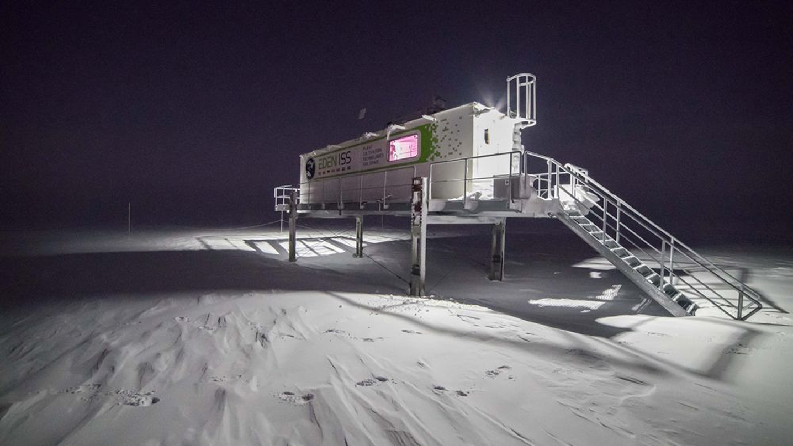

Cultivando a vida onde nada deveria crescer
Monitoramento inteligente de estufas para colônias espaciais. Controle ambiental autônomo em Marte, Lua e outras estações orbitais.
Quer testar seus conhecimentos sobre nosso produto?
Fazer quiz